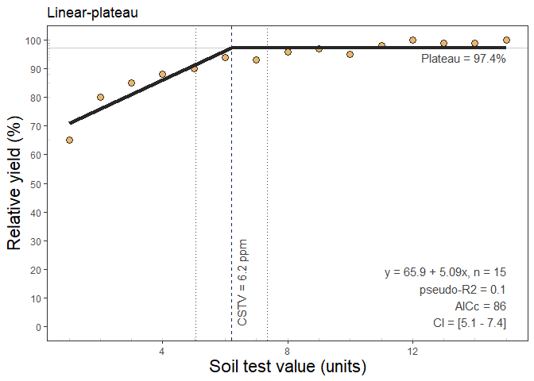

You can install the latest CRAN version of soiltestcorr with:
install.packages("soiltestcorr")Alternatively, you can install the development version of soiltestcorr from GitHub with:
# install.packages("devtools")
devtools::install_github("adriancorrendo/soiltestcorr")For more details, visit the Vignettes
Description
The goal of soiltestcorr is to assist users on reproducible analysis of relationships between crop relative yield (ry) and soil test values (stv) following different approaches.
The available methods of correlation analysis in soiltestcorr are:
1. Modified Arcsine-Log Calibration Curve
The first method available is the Modified Arcsine-log Calibration Curve (mod_alcc()) originally described by Dyson and Conyers (2013) and modified by Correndo et al. (2017). This function produces the estimation of critical soil test values (CSTV) for a target relative yield (ry) with confidence intervals at adjustable confidence levels.
mod_alcc()
Instructions
Load your data.frame with soil test value (stv) and relative yield (ry) data.
Specify the following arguments into the function -mod_alcc()-:
(a). data (optional),
(b). stv (soil test value) and ry (relative yield) columns or vectors,
(c). target of relative yield (e.g. 90%),
(d). desired confidence level (e.g. 0.95 for 1 - alpha(0.05)). Used for the estimation of critical soil test value (CSTV) lower and upper limits.
(e). plot TRUE (produces a ggplot as main output) or FALSE -default- (no plot, only results as list or data.frame),
(f). tidy TRUE (produces a data.frame with results) or FALSE-default- (store results as list),
Run and check results.
Check residuals plot (see Section 3.3 SMA Residuals), and warnings related to potential leverage points.
Adjust curve plots as desired.
Example of mod_alcc() output
#> Warning: One or more original RY values exceeded 100%. All RY values greater
#> than 100% have been capped to 100%.
#> Warning: 2 STV points exceeded the CSTV for 100% of RY.
#> Risk of leverage. You may consider a sensitivity analysis by removing extreme points,
#> re-run the mod_alcc(), and check results.
#> Warning: 2 STV points exceeded two-times (2x)
#> the CSTV for 90% of RY. Risk of leverage. You may consider a sensitivity analysis by
#> removing extreme points, re-run the mod_alcc(), and check results.
2. Cate & Nelson Quadrants Analysis (1965)
soiltestcorr also allows users to implement the quadrants analysis approach, also known as the Cate-Nelson analysis. There are two versions of the Cate-Nelson technique:
Thus, the second alternative is based on Cate and Nelson (1965) (cate_nelson_1965()). The first step of this method is to apply an arbitrarily fixed value of ry as a target (y-axis) that divides the data into two categories (below & equal or above ry target). In a second stage, it estimates the CSTV (x-axis) as the minimum stv that divides the data into four quadrants (target ry level combined with STV lower or greater than the CSTV) maximizing the number of points under well-classified quadrants (II, stv >= CSTV & ry >= ry target; and IV, stv < CSTV & ry < RY target). This is also known as the “graphical” version of the Cate-Nelson approach.
cate_nelson_1965()
Instructions
Load your data.frame with soil test value (stv) and relative yield (ry) data.
Specify the following arguments into the function -cate_nelson_1965()-:
(a). data (optional),
(b). stv (soil test value) and ry (relative yield) columns or vectors,
(c). plot TRUE (produces a ggplot as main output) or FALSE (no plot, only results as list or data.frame),
(d). tidy TRUE (produces a data.frame with results) or FALSE (store results as list),
Run and check results.
Adjust plot as desired.
Example of cate_nelson_1965() output 
3. Cate & Nelson Quadrants Analysis (1971)
The third alternative is based on Cate and Nelson (1971) (cate_nelson_1971()). The first step of this alternative version is to estimate the CSTV (x-axis) as the minimum stv that minimizes the residual sum of squares when dividing data points in two classes (lower or greater than the CSTV) without using an arbitrary ry. This refined version does not constrains the model performance (measured with the coefficient of determination -R2-) but the user has no control on the RY level for the CSTV. This is also known as the “statistical” version of the Cate-Nelson approach.
cate_nelson_1971()
Instructions
Load your data.frame with soil test value (stv) and relative yield (ry) data.
Specify the following arguments into the function -cate_nelson_1971()-:
(a). data (optional),
(b). stv (soil test value) and ry (relative yield) columns or vectors,
(c). plot TRUE (produces a ggplot as main output) or FALSE (no plot, only results as list or data.frame),
(d). tidy TRUE (produces a data.frame with results) or FALSE (store results as list),
Run and check results.
Adjust plot as desired.
Example of cate_nelson_1971() output 
4. Linear-plateau Regression
The next method available is the linear-plateau model (linear_plateau()). This function fits the classical regression response model that follows two phases: i) a first linear phase described as y = a + b*x, and ii) a second plateau-phase (Anderson and Nelson, 1975) were the ry response to increasing stv becomes NULL (flat), described as plateau = y = a + b*Xc, where y represents the fitted crop relative yield, x the soil test value, a the intercept (ry when stv = 0) , b the slope (as the change in ry per unit of soil nutrient supply or nutrient added), and X_c the join-point when the plateau-phase starts (i.e. the CSTV). The linear_plateau() function works automatically with self starting initial values to facilitate the model’s convergence.
linear_plateau()
Instructions
Load your data.frame or vectors with soil test value (stv) and relative yield (ry) data.
Specify the following arguments into the function -linear_plateau()-:
(a). data (optional),
(b). stv (soil test value) and ry (relative yield) columns or vectors,
(c). target (optional) if want to know stv level needed for a different `ry`` than the plateau.
(d). plot TRUE (produces a ggplot as main output) or FALSE (no plot, only results as data.frame),
(e). resid TRUE (produces plots with residuals analysis) or FALSE (no plot),
Run and check results.
Check residuals plot, and warnings related to potential limitations of this model.
Adjust curve plots as desired.
Example of linear_plateau() output 
5. Quadratic-plateau Regression
The following correlation method available is the quadratic-plateau model (quadratic_plateau()). This function fits the classical regression response model that follows two phases: i) a first curvilinear phase described as y = a + b*x + c*x^2, and ii) a second plateau-phase (Bullock and Bullock, 1994) were the ry response to increasing stv becomes NULL (flat), described as plateau = y = a + b*Xc + c*Xc, where y represents the fitted crop relative yield, x the soil test value, a the intercept (ry when stv = 0) , b the linear slope (as the change in ry per unit of soil nutrient supply or nutrient added), c the quadratic coefficient (giving the curve shape), and X_c the join-point when the plateau-phase starts (i.e. the CSTV). The quadratic_plateau() function works automatically with self starting initial values to facilitate the model convergence.
quadratic_plateau()
Instructions
Load your data.frame with soil test value (stv) and relative yield (ry) data.
Specify the following arguments into the function -quadratic_plateau()-:
(a). data (optional),
(b). stv (soil test value) and ry (relative yield) columns or vectors,
(c). target (optional) if want to know stv level needed for a different `ry`` than the plateau.
(d). plot TRUE (produces a ggplot as main output) or FALSE (no plot, only results as data.frame),
(e). resid TRUE (produces plots with residuals analysis) or FALSE (no plot),
Run and check results.
Check residuals plot, and warnings related to potential limitations of this model.
Adjust curve plots as desired.
Example of quadratic_plateau() output

6. Mitscherlich Regression
This function fits an exponential regression response model (Melsted and Peck, 1977) that follows a curve shape described as y = a * (1-exp(-c(x + b)), where a = asymptote, b = xintercept, c = rate or curvature parameter. The mitscherlich() function works automatically with self starting initial values to facilitate the model’s convergence. This approach is extensively used in agriculture to describe crops response to input since the biological meaning of its curved response. With 3 alternatives to fit the model, this function brings the advantage of controlling the parameters quantity: i) type = 1 (DEFAULT), corresponding to the model without any restrictions to the parameters (y = a * (1-exp(-c(x + b))); ii) type = 2 (“asymptote 100”), corresponding to the model with only 2 parameters by setting the asymptote = 100 (y = 100 * (1-exp(-c(x + b))), and iii) type = 3 (“asymptote 100 from 0”), corresponding to the model with only 1 parameter by constraining the asymptote = 100 and xintercept = 0 (y = 100 * (1-exp(-c(x))).
Instructions
Load your data.frame with soil test value (stv) and relative yield (ry) data.
Specify the following arguments into the function -mitscherlich()-:
(a). data (optional),
(b). stv (soil test value) and ry (relative yield) columns or vectors,
(c). target (optional) if want to know stv level needed for a specific ry.
(d). plot TRUE (produces a ggplot as main output) or FALSE (no plot, only results as data.frame),
(e). resid TRUE (produces plots with residuals analysis) or FALSE (no plot),
Run and check results.
Check residuals plot, and warnings related to potential limitations of this model.
Adjust curve plots as desired.
Example of mitscherlich() output

References
Anderson, R. L., and Nelson, L. A. (1975). A Family of Models Involving Intersecting Straight Lines and Concomitant Experimental Designs Useful in Evaluating Response to Fertilizer Nutrients. Biometrics, 31(2), 303–318. 10.2307/2529422
Bullock, D.G. and Bullock, D.S. (1994), Quadratic and Quadratic-Plus-Plateau Models for Predicting Optimal Nitrogen Rate of Corn: A Comparison. Agron. J., 86: 191-195. 10.2134/agronj1994.00021962008600010033x
Cate, R.B. Jr., and Nelson, L.A., 1965. A rapid method for correlation of soil test analysis with plant response data. North Carolina Agric. Exp. Stn., International soil Testing Series Bull. No. 1.
Cate, R.B. Jr., and Nelson, L.A., 1971. A simple statistical procedure for partitioning soil test correlation data into two classes. Soil Sci. Soc. Am. Proc. 35:658-659
Correndo, A.A., Salvagiotti, F., García, F.O. and Gutiérrez-Boem, F.H., 2017. A modification of the arcsine–log calibration curve for analysing soil test value–relative yield relationships. Crop and Pasture Science, 68(3), pp.297-304. 10.1071/CP16444
Dyson, C.B., Conyers, M.K., 2013. Methodology for online biometric analysis of soil test-crop response datasets. Crop & Pasture Science 64: 435–441. 10.1071/CP13009
Melsted, S.W. and Peck, T.R. (1977). The Mitscherlich-Bray Growth Function. In Soil Testing (eds T. Peck, J. Cope and D. Whitney). 10.2134/asaspecpub29.c1
Warton, D.I., Wright, I.J., Falster, D.S., and Westoby, M., 2006. Bivariate line-fitting methods for allometry. Biol. Rev. Camb. Philos. Soc. 81, 259–291. 10.1017/S1464793106007007